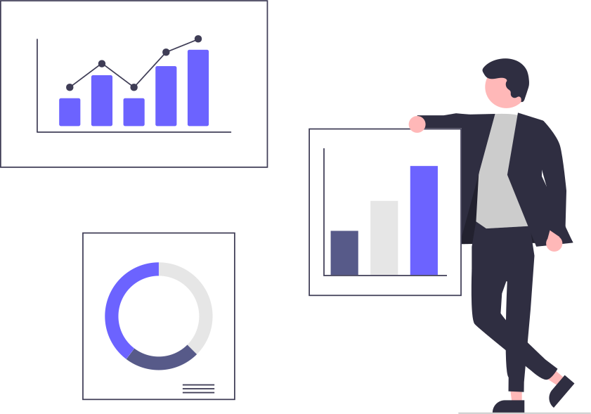

Experimental & observational studies
Assist you in identifying and
conducting the most appropriate statistical analyses for your
study. All analyses are conducted in R or Python and are always
delivered with figures and detailed explanations. We have
experience in conducting:
-
Generalized linear models. ANOVAs and multiple
linear/logistic regressions [1], multivariate linear regressions [2]
-
Mixed models. Generalized linear mixed models and
generalized estimating equations [3]
-
Survey-weighted regressions. Generalized linear models
with a design including stratification, clustering, survey
weights and/or finite population correction factors [4].
-
Propensity score matching. Generalized linear mixed
models and generalized estimating equations [5]
-
Mediation and moderation mediations. Simple level
moderated mediations [6], multilevel moderated moderated mediations [7]
-
Multiple imputations. Multiple imputation with chained
equations [8]
-
Cross lagged panel models. Standard cross-lagged panel
models and random-intercept cross-lagged panel models [9]